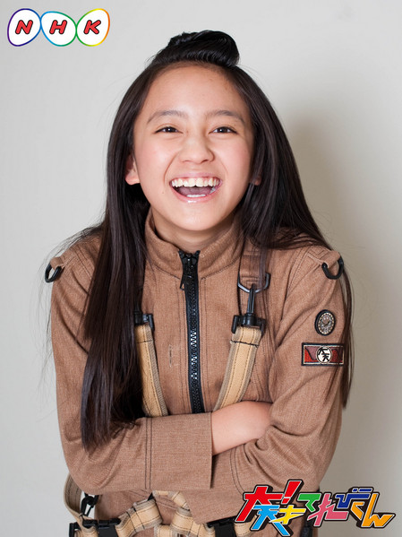

<<2013年2月 | トップページ | 2013年4月>>
2013年3月
【今年度印象に残った企画：ベスト３】鎮西寿々歌
はろろろろーん♪
寿々歌です♪(´ε｀ )
印象に残ったBest3！
はっぴょーーします！
第3位
ダラダラダラダラダラ…
じゃん！！
大天ドラマの「君の姿が変わっても事件」の回！
学校の友達からも好評でした！ボスの寿々歌メイクを見て、そっくり過ぎ！と思いましたねっ。
気持ち悪くて面白かったです！
そして第2位
ダラダラダラダラダラ…
じゃじゃん！
スタジオバラエティの大天才フレンドパークの回！
ずびーの「言って!!」が最高でした。笑
撮影の時、生で見た時のずびーは、面白すぎてお腹が痛かったです。
皆さんにノーカット版で見ていただきたいくらい\(//∇//)\笑
そしてそして！！！
堂々の第1位！！！！☆
大天ドラマの「さよならは突然に事件」の回！！
やっぱこれですね！！！
これは、てれび戦士とボス、あっきーといる時に、みんなで見たんです。
最後の中2のシーン。ジーンときちゃったな。自分で言うのもなんですが。笑
あかりの最後の顔も良かったですね〓
また、どのシーンもゆっくり見てみたいです♪(´ε｀ )
みんなはどのシーンが好きなのかな？♪(´ε｀ )
投稿者:鎮西寿々歌 | 投稿時間:00時00分 | カテゴリ：We are 大天才テレビジョン | 固定リンク


 " title="ソーシャルブックマークについて">
" title="ソーシャルブックマークについて">
※NHKサイトを離れます。
【今年度印象に残った企画：ベスト３】長谷川ニイナ
☆今日は、２０１２年度の企画の中で特に印象に残ったものを発表します☆
１位 「ロック魂でヒットをねらえ！」
この回では、自分でも「誰だ！？」と思うほどの大変身ができ、とっても面白かったです！
そして何よりも、人生初の作詞・作曲をROLLYさんと一緒にすることができたのが、一番印象に残りました☆
２位 大！天才クエストⅡ：最後の大逆転のシーン
本当に、最後の女子がルーレットで大逆転をした時は驚いたなぁ～！！
こういう事ってあるんですね！ありがとう！！古坂大魔王さん！！
でもテストで北海道に行けなかったのは残念だったです。
３位 古坂大魔王のマル秘ダメトーク：告白されて半年以上返事をしていない。どうすればよい？
どの意見もお腹が痛くなるくらい、面白く笑いが止まらなかったです！！
特に寿々歌の「I LOVE 文房具☆」が印象に残り、これを言えば絶対大丈夫だろうな～と思いました！！
さすが寿々歌先輩！！！
こんな感じで～す！！
皆さんは何が一番印象に残りましたか？
ニイナ

投稿者:長谷川ニイナ | 投稿時間:18時00分 | カテゴリ：We are 大天才テレビジョン | 固定リンク
" title="ソーシャルブックマークについて">
※NHKサイトを離れます。
【今年度印象に残った企画：ベスト３】浅賀玲音
どうも！れおです
今年度印象に残った企画
ベスト3は！
第三位！「マイケル・ジャクソンのスリラーを踊れ」
スリラーはゾンビメイクが
できて超楽しかったので
印象に残ってます( ´ ▽ ` )ノ
第二位！「インパクトある映像で知名度向上をねらえ！」
今年度の一番最初に
アクションでびっくりしたし空中でくるんって
やるやつが楽しすぎたので
印象に残ってます！
そして第一位！
「季節はずれの卒業試験」での腕立て伏せ
これはもうwwwww
自分のできなささが最悪
だしなにより内藤大輔さん
からメッセージを
いただいたのが本当に
嬉しかったです(^O^)／
これが僕のベスト3です！
みなさんは
どの企画がベスト3でしたか？
投稿者:浅賀玲音 | 投稿時間:18時00分 | カテゴリ：We are 大天才テレビジョン | 固定リンク
" title="ソーシャルブックマークについて">
※NHKサイトを離れます。
【今年度印象に残った企画：ベスト３】島田太一
１位 (￣ー￣)上を向いて歩こう事件
いやぁ～、あのドラマは名作なんじゃないですか？（笑）
とてもやってて楽しかったし、見てても面白かったので（笑）。
友達にも良かったねと言われたので、うれしかったです。
そこでタマッシーを呼ぶ竹ちゃんの声も最高でした。
トゥルルルル～。
２位 フダケリ「ワルズの陰謀～対川崎Ｆ嫌がらせ作戦」
ハガレルメッキが休みで、わるりさん、じゃまだの２人で等々力競技場に行ってフロン太くんがキーパーでPKをして最初にワルドーナZさんがけってゴールのネットをゆらして次にじゃまだがけったらゴール入ってサポーターのブーイングをあびました。
次にわるりさんがけってはいったぁぁ。
やったあああああああー！！！！！！！
！３位！ 「芸術の秋は終わらない！似顔絵を描く。」
これは自分ではそこまで絵に自信が無かったのですが、
意外にボスとあきえさんにほめられたのでとてもうれしかったです。
あと、おどりながら絵をかくという個性的な描き方もしたので(￣ー￣)／
↓ 写真はかくれた名作ロックです
投稿者:島田太一 | 投稿時間:18時00分 | カテゴリ：We are 大天才テレビジョン | 固定リンク
" title="ソーシャルブックマークについて">
※NHKサイトを離れます。
【今年度印象に残った企画：ベスト３】長江崚行
はい！崚行でございます。
今年度印象に残った企画は…
第三位、『出川特命Pプレゼンツ・お祝い20連発』
第二位、『ビジュアル系バンドになりきれ』
第一位、『君の姿が変わっても事件』
『出川特命Pプレゼンツ・お祝い20連発』は、僕の担当だった鈴を鳴らすお祝い。
アレは印象に残りまくってます。笑
『ビジュアル系バンドになりきれ』は、撮影場所が綺麗だったり、Bug Lugの皆さんが優しかったりして、印象に残ってます。めっちゃ楽しかった?
『君の姿が変わっても事件』は、僕の演技力への印象しか残ってませんね。笑
精進せねばっ。
と思いました。
ということで、
僕の今年度印象に残った企画ベスト3でした！
んbye！⊂(^_^)⊃
RYO-KI
投稿者:長江崚行 | 投稿時間:18時00分 | カテゴリ：We are 大天才テレビジョン | 固定リンク
" title="ソーシャルブックマークについて">
※NHKサイトを離れます。
【今年度印象に残った企画：ベスト３】寺田朱里
やあ！！あかりです！！
今年度印象に残った企画ベスト３を発表します！
まずは第３位！！
じゃがじゃがじゃが・・・・・・・・・！
「ロック魂でヒットをねらえ！」！！
ROLLYさんが一生懸命ロックについて説明していて、とてもわかりやすかった！！
あと歌をうたったのがすごくインパクトあったぁー！
第２位・・・・・・！
「古坂大魔王のマル秘ダメトーク」の上くちびるをさわった時の回！
お悩み相談をきいて、これはどうすればいいんだろーって考えていたら、くせで上唇をさわっていて。
それを古坂大魔王にツッコまれた時は、このくせって普通じゃないんだ！ってびっくりした印象がある。
第１位ーーーーーー！！
「大！天才フレンドパーク」！
皆が競技している間に後ろでワイワイさわいでいて、とっても楽しかったのがおもしろかったー！
またやりたいなぁ。
以上！！！ばいばーい！♪
投稿者:寺田朱里 | 投稿時間:18時00分 | カテゴリ：We are 大天才テレビジョン | 固定リンク
" title="ソーシャルブックマークについて">
※NHKサイトを離れます。
【今年度印象に残った企画：ベスト３】金子隼也
こんにちは！
隼也です(^-^ゞ
僕が今年度印象に残った企画Best3は…
１位「金子隼也改造計画」
スタジオに入って収録が始まって聞かされた企画！
本当にビックリしました。全くやらないモノマネをやってすごく恥ずかしかったです！
でも「愛」ですよね。１年で少し成長できたかな…。
２位「フダケリ～ワルズの逆襲」
川崎フロンターレ・ファン感謝デーにワルズのスパイがやってくる？！
まさか隠し撮りされていたとは思いませんでした。
しかも小さい時の写真まで出てくるとは…!!
ビックリしすぎて理解するのに時間がかかりました。（笑）
あっ！これはハガレルメッキの感想ですねΨ(`∀´#)
３位「ドウブツカメラ」
もともと写真を撮るのが好きなので大変だったけど楽しかったです。
番組を観てくれているお家におじゃましたり、初めてみるツル！
どれも良い写真が撮れてすごく嬉しかったです。
投稿者:金子隼也 | 投稿時間:18時00分 | カテゴリ：We are 大天才テレビジョン | 固定リンク
" title="ソーシャルブックマークについて">
※NHKサイトを離れます。
【今年度印象に残った企画：ベスト３】岡田結実
３位 ジャーン！
ドウブツカメラ
理由：犬の写真を撮って犬と仲よくできて、めっちゃうれしかったし・・・。
犬の写真を撮ったおかげで写真を撮るのが好きになりました！
２位
男装女子が理想の男性像を追求
理由：ずっと男子になりたくて念願が叶い、
自分のタイプにちかい人をマネできて最高にうれしかったです♪
またやりたいです。
１位
クイズ・ブラジル
問題が楽しくて、自分がおバカなのが分かりました笑。
でも、問題が１問も分からなかったのがざんねん！
いつもの日常生活の事なら問題は全問正解いけます！！笑
だからやって下さーい！！

投稿者:岡田結実 | 投稿時間:18時00分 | カテゴリ：We are 大天才テレビジョン | 固定リンク
" title="ソーシャルブックマークについて">
※NHKサイトを離れます。
【今年度印象に残った企画：ベスト３】ソーズビー航洋
１位 大！天才クエストⅡ＆夏イベ
ぼくは、おにごっこ大好きで、２日目は本格的なおにごっこできました！！
あのハラハラ、ドキドキって感じが最高でした！！
夏イベは、小さいころからあこがれていたぶたいにやっとでれて、
”フンコロガシ”というなかなかできない変わった役ができました^^
２位 ドウブツカメラ 笑顔の写真の回！！
ぼくは、動物がだぁぁぁぁぁぁぁぁい好きで、ぶっちゃけ動物に好かれるタイプなんです。
犬、ねこ、ラクダ、フクロウと４つの動物とふれ合えました^^
帰りが悲しかったです(´Д｀)
３位 大！天才フレンドパーク
あんなに楽しい運動会らしきものはありません！！
ニイナとコンビで楽しかったです^^
思ったより自分があせってました(^▽^;)
ぜんぶまた時間がもどってほしいです！！
Koyo.S
投稿者:ソーズビー航洋 | 投稿時間:18時00分 | カテゴリ：We are 大天才テレビジョン | 固定リンク
" title="ソーシャルブックマークについて">
※NHKサイトを離れます。
【今年度印象に残った企画：ベスト３】山田陶子
コンニチワ 山田です。
陶子です・・・ 陶子です・・・ 陶子です・・・
ハハ・・・ ハハ・・・ ハハハハハハハ
えんめいです
ウソです（笑）
はい、お～わり（むだ話）
そうですねｪ～
３位は、あれですね。
『オリンピック直前！クイズ・イギリス』
知らなかった事が多すぎました（笑）
つづいて
２位 フフ
『二人三脚運動会』ですネ・・・
スズカさんとのコンビ・・・
楽しかったです（笑）
そして、
１位・・・・・・・・・
『人の話を聞け 嗣永桃子さん』
オー！！モモチさん
とってもおもしろい人でした。
そして、とってもやさしかったです。
ももちさん、ありがとうございました。
という感じですね！！
あーーー！！そういえば本番のあと、いっしょにおにごっこしました！！
たのしかった！！です。
では～
山田トーコではなくトウコ！！でした。
投稿者:山田陶子 | 投稿時間:18時00分 | カテゴリ：We are 大天才テレビジョン | 固定リンク
" title="ソーシャルブックマークについて">
※NHKサイトを離れます。
【今年度印象に残った企画：ベスト３】黒澤美澪奈
こんにちは！みれなです（＾０＾）
印象に残った企画ベスト３！！ということで・・・
第３位！！ ドウブツカメラの「ヘビ」！！
もう、最初「アミメニシキヘビ」を見てから、ヘビはダメだと思ってたけど、
「ボールパイソン」という「ヘビ」をさわったら、
な～んと、ヘビがかわいくいみえてきたんです！！
そして、第２位！！ 「交渉術を磨け」！！
ボスがあのとき、めっちゃこわかったので、泣いちゃったときです！
そして、第１位！！ 「スキヤキパーティ大！作戦」！！！
とくに、「２０周年祝！お祝い２０れんぱつ」のときにできなかった「さら回し」！！
あれですよ・・・。もうくやしくて、泣きましたから・・・。
でもでも！！最後のリレーのときに、さら回しができたんですよ！！
もううれしかったです！！
一年通して、いろいろありましたね～♪
以上、ミレナでした～！
投稿者:黒澤美澪奈 | 投稿時間:18時00分 | カテゴリ：We are 大天才テレビジョン | 固定リンク
" title="ソーシャルブックマークについて">
※NHKサイトを離れます。
大天才テレビジョン もっちーからのお知らせ
こんにちは！大天才テレビジョン 広報のもっちーです。
ただいま、大天才テレビジョンのスタッフは新年度準備に向けておおわらわ！！
バタバタした毎日を送っております…( ･｀ω･)-○))～～～～～～～Ю☆
もっちーから、みなさんにお知らせ２つです！！
その１。「人の話を聞け」のゲストへの質問・リクエストを大募集中！
歌手・はいだしょうこさん ＆ 騎手・三浦皇成さん への質問を募集中です。
応募はこちらから。みなさん、お便りお待ちしてます～☆☆☆
その２。大天才テレビジョン 特製グッズの抽選に参加しよう！
ネットクラブのポイントを使って、
大天才テレビジョン特製の文具セットやハガキの抽選に参加できます！
今年度のグッズ抽選は、最後のチャンスになります。締切は２１日（木）正午！！
いつもより抽選数多めにご用意してます。皆さんのご応募お待ちしております～o(*’▽’*)/☆ﾟ’
ご応募は番組ＨＰ（http://www.nhk.or.jp/tvkun/）から！！
※抽選に参加するには、番組のプレミアム会員になることが必要です。
投稿者:もっちー＠大天才テレビジョン広報室 | 投稿時間:20時00分 | カテゴリ：お知らせ！ | 固定リンク
" title="ソーシャルブックマークについて">
※NHKサイトを離れます。
【今年度印象に残った企画：ベスト３】竹原司
ちはこん～！！
今年一年楽しかったけど、その中のベスト３を発表します！ハッ☆（ピキンッ）
第３位「バラエティ アクション！！」
第２位「人の話を聞け 和田アキ子さん」
第１位「ヴィジュアル系バントになりきれ」 です。
第３位は、一番初めのバラエティで楽しかったし、
アクションスターになったきぶんだった！
第２位の和田アキ子さんの人の話を聞けでは、
しょうじきめっちゃアキ子さんのことを
めっちゃびびっていて、でもたのしかったです。
そして第１位・・・・・。
ヴィジュアル系です。
一番はずかしかったけど、一番たのしかったし、
MTKがうたえてよかったです！

投稿者:竹原司 | 投稿時間:18時00分 | カテゴリ：We are 大天才テレビジョン | 固定リンク
" title="ソーシャルブックマークについて">
※NHKサイトを離れます。
【今年度印象に残った企画：ベスト３】延命杏咲実
こんにちは！！延命で～す♪
さて、私がいんしょうにのこったっきかくベスト３は・・・
まず３位から！
３位は・・・ドウブツカメラのねこをとる回です！
もう、ねこちゃんかわいすぎ！
２位は・・・「インパクトある映像で知名度向上をねらえ！」
一番さいしょのバラエティのアクションです！！
私はフライパンでおしりをパコ～ン！
学校ですごくひょうばんがよかったです！
そして、どうどうの１位にかがやいたのは・・・
バラエティの「きせつ外れのそつぎょうしけん」です！
このバラエティといえば・・・そう！自転車です！
もう、まいりました・・・。
学校の子からも笑われました・・・。
でも、けっかオーライですよ！出来てうれしかったです。
よ～し！これからも自転車のるぞ～☆
投稿者:延命杏咲実 | 投稿時間:18時00分 | カテゴリ：We are 大天才テレビジョン | 固定リンク
" title="ソーシャルブックマークについて">
※NHKサイトを離れます。
【もうすぐ春ですね】鈴木あきえ
まだまだ寒～いけど、
わたしは寒さが少しずつ和らいで春の風が吹き始めるこの季節が大好きです☆
今年の春になったら必ずすること！
ズバリ髪を切ること★
桜味のスイーツを食べること★
花粉症と友達になること★
これを目標に掲げていきたいと思います(▼∀▼)
新学期、新生活、素敵なスタートできますように♪♪♪
写真はてれび戦士がくれたTシャツを着たボスと私。
投稿者:鈴木あきえ | 投稿時間:18時00分 | カテゴリ：We are 大天才テレビジョン | 固定リンク
" title="ソーシャルブックマークについて">
※NHKサイトを離れます。
【もうすぐ春ですね】長谷川ニイナ
こんにちは！！春生まれのニイナです！！
「もうすぐ春」→「もうすぐ誕生日」という事で、とっても春が楽しみです！！
ウキウキ～♪
私の誕生日は「３月３１日」で、とってもギリギリなんですが、お父さんの話によると、北海道の有珠山という山が噴火している瞬間に生まれたそうで、ちょっぴり自慢です！
さて、プレゼントはどうしようかなぁ？
今年の春は、家族全員で、庭の芝生をひく作業をするそうなので、それの手伝いをしようと思っています！
去年もひいたんですが、まだ、ひけていない所が２０％ぐらいあるので！！
よし、頑張るぞ～☆
皆さんは、今年の春は何をする予定ですか！？
投稿者:長谷川ニイナ | 投稿時間:18時00分 | カテゴリ：We are 大天才テレビジョン | 固定リンク
" title="ソーシャルブックマークについて">
※NHKサイトを離れます。
【もうすぐ春ですね】鎮西寿々歌
もーすぐ春ですね。
寿々歌です☆
あーー、私の強敵。
花粉の季節です。
辛いですよね？
花粉症の方は…
春は沢山オシャレしたいです♪
春ってすごくファッションの時期では、短いんですよね。
薄着だと肌寒く
着込むと暑すぎるという。
それで、春服を出すタイミングを逃すという…
だけど、春服ってめっちゃ買ってしまうんです。
色合いとかデザインとか可愛すぎる\(//∇//)\
難しいデスね…
だから今年は着るタイミングは逃しません！！！
最近思うんです。
写真と記事全く違う。笑
これぞ、寿々歌スタイル。
許してちょ♪(´ε｀ )
投稿者:鎮西寿々歌 | 投稿時間:18時00分 | カテゴリ：We are 大天才テレビジョン | 固定リンク
" title="ソーシャルブックマークについて">
※NHKサイトを離れます。
【もうすぐ春ですね】浅賀玲音
どうも！れおです
もうすぐ春だあああ！
1番好きな季節なのです
明るい色の洋服を
たくさん着たいし
ぽかぽか日和には外に出て
遊んだりお昼寝したり
色々したいけれど
1番したいことは
友達とお花見しながら
それぞれお弁当を
持ち寄って食べることです！
----
早く春にならないかなあ...
皆さんは何が楽しみですか？
投稿者:浅賀玲音 | 投稿時間:18時00分 | カテゴリ：We are 大天才テレビジョン | 固定リンク
" title="ソーシャルブックマークについて">
※NHKサイトを離れます。
【もうすぐ春ですね】長江崚行
もうすぐ春かー……
終わって始まる季節。
とてもとても大切な季節ですねー！
一つの区切りとして、毎年毎年大切にしてます。
何かを始めるのに適した季節。
でもあり、区切りをつけるのに適した季節。
でもありますね。
なのでぼくは、一つ。新しく始めることにしました！
教えないけどねっ！！
( ；´Д｀)
笑
ありがとうございました！
んbye！⊂(^_^)⊃
RYO-KI
投稿者:長江崚行 | 投稿時間:18時00分 | カテゴリ：We are 大天才テレビジョン | 固定リンク
" title="ソーシャルブックマークについて">
※NHKサイトを離れます。
【もうすぐ春ですね】黒澤美澪奈
こんにちは～ヽ(´▽`)/
みれなです！
もうすぐ春ですね～♪
春、あたたかくなったら…
『いろんなところに遊びに行きた～い!!』
です！(笑)
まだ、登ったことがないから、
『スカイツリー』の上から、景色を見てみたいな～♪
あと、私は以前、愛知に住んでいて、
和歌山が近かったから、そこのパンダは見に行ったことがあるけど、
『上野動物園』のパンダは、まだ見たことがないので、
見に行ってみたいな～♪
きっと、可愛いいんだろうな～ (//∀//)
あっ！！
ＮＨＫの『スタジオパーク』も、おもしろいですよ～
Ｏ(≧▽≦)Ｏ
この前、撮影が早く終わった日に、
隼也くんと延命ちゃんと３人で一緒に、スタジオパークへ遊びに行きました！
３Ｄ映像を見たり、
クイズに挑戦したり、
とっても楽しかったです！
あるコーナーには、顔を画面にうつすと、
自分の顔がどの動物に似ているのか、判定してくれるマシンがありました！
ちなみに私は、
ミーアキャットに似ているんだそうです
(=^ェ^=)
いっぱい遊んだあとに、おみやげコーナーに行きました！
そこには、私たちの夏イベのＤＶＤがありました！
それに、大！天才てれびくんのポスターも貼ってあって、
ちょっと嬉しかったです！
(*^∀^*)
あと、プリクラの機械もあって、３人でプリクラを撮りました！
ほんと楽しかったな～♪
また、遊びに行きたいです
みんなも、あたたかくなったら
スタジオパークに、遊びに行ってみてね～
(⌒0⌒)／
（※スタジオパークは冬でもあたたかいです！）
投稿者:黒澤美澪奈 | 投稿時間:18時00分 | カテゴリ：We are 大天才テレビジョン | 固定リンク
" title="ソーシャルブックマークについて">
※NHKサイトを離れます。
【もうすぐ春ですね】島田太一
春には小学校を卒業して、中学生になります。
中学校では部活に入らないという選択は出来ないのです。
どの部活動も大変そうです。
この前、部活動見学に行きました。
たくさんの部がありました。
その日から、どの部活に入ろうかすごくまよってます。
けれど、とりあえず運動系のものにはいりたいです。
それと、勉強もムズカしそうなので、算数などをきちんと理解したいです。
中学校に入っても元気にたのしく頑張りたいです。 (*>ω<)＞
投稿者:島田太一 | 投稿時間:18時00分 | カテゴリ：We are 大天才テレビジョン | 固定リンク
" title="ソーシャルブックマークについて">
※NHKサイトを離れます。
【もうすぐ春ですね】山田陶子
ご紹介します。
我が家の「こけまる」です。
よく見てください↓
どんぐりさんから、芽？根？出てきてます。
春です。
超感動です。
愛おしいです。
この春は、この子の観察していこうかと・・・。
そして、いつもと変わらず、春が楽しく過ごせたらと思ってます。
投稿者:山田陶子 | 投稿時間:18時00分 | カテゴリ：We are 大天才テレビジョン | 固定リンク
" title="ソーシャルブックマークについて">
※NHKサイトを離れます。
【もうすぐ春ですね】竹原司
こんにちは！！司です。
春はやっぱりお花見に行きたいです！！
毎年僕は代々木公園でお花見をしています。
お花見といえば、おいしい物を食べながらきれいな花を見て、
友達とサッカーや野球をしておやつを食べる事です！！！
でも、僕は「花よりだんご」なのかな（笑）
それでは、さようなら～！
春が好きな司より！！
写真は僕が去年とった花です！
投稿者:竹原司 | 投稿時間:18時00分 | カテゴリ：We are 大天才テレビジョン | 固定リンク
" title="ソーシャルブックマークについて">
※NHKサイトを離れます。
ページの一番上へ▲